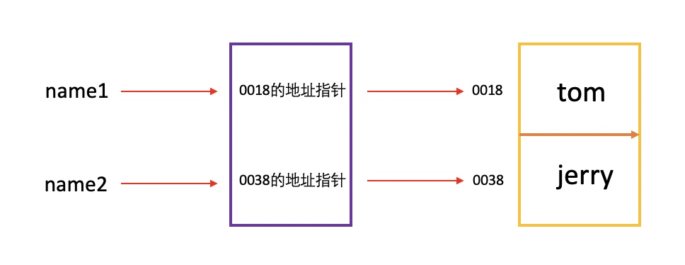
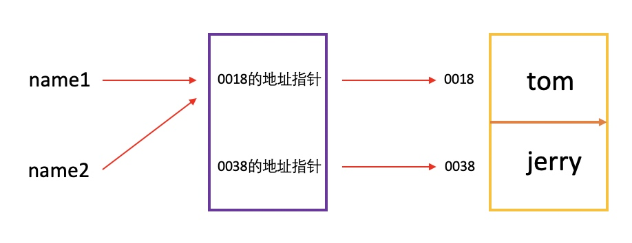
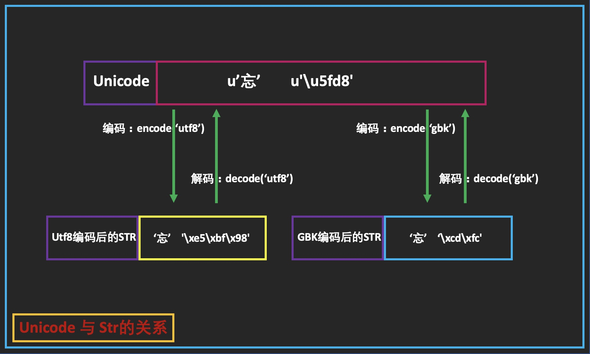
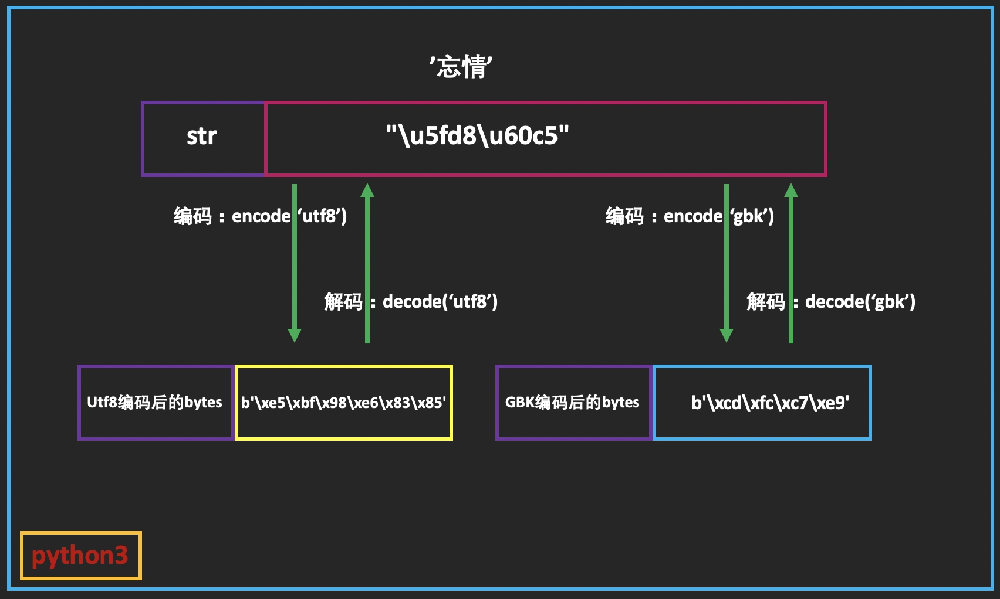
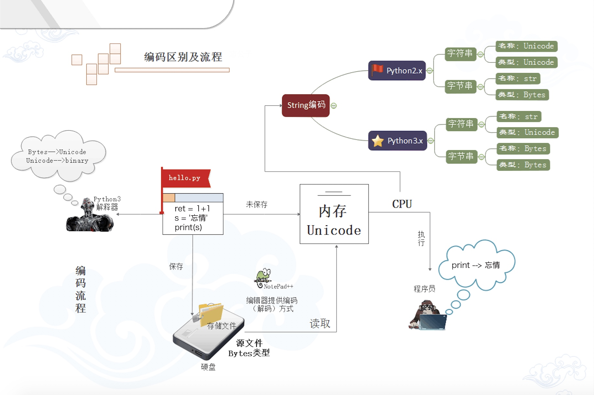

变量与字符编码
1 变量
1.1 变量的作用
在写程序时经常要用到变量，那么变量有什么作用呢？
- 保存表达式运算的结果至内存，方便复用或更改
- 若无变量而需复用表达式运算的结果只能重新运算，耗时较长
- 可以把变量理解为一个存储信息的容器
1.2 变量的取名讲究
变量取名的讲究有很多，具体如下：
- 变量名应做到见名知义
- 变量名区分大小写
- 变量名中有多个单词时有两种方式表示
- 单词间使用下划线分隔(官方推荐)
- 首单词小写，后面单词的首字母大写
- 变量名只能由下划线、数字、字母组成，不能是空格或特殊字符(#?<.,$￥!~@*&)
- 不能以中文做变量名
- 不能以数字或大写字母开头
- 所有字母都是大写表示常量
- 不能是保留字
常见的保留字
| and | as | assert | break | class | continue | def | del | elif | else |
|---|---|---|---|---|---|---|---|---|---|
| except | exec | finally | for | from | global | if | import | in | is |
| lamda | not | or | pass | raise | return | try | while | with |
1.3 变量赋值
[root@localhost ~]# python3.7
Python 3.7.3 (default, Jun 24 2019, 04:58:51)
[GCC 4.8.5 20150623 (Red Hat 4.8.5-36)] on linux
Type "help", "copyright", "credits" or "license" for more information.
>>> name1 = 'tom' //定义一个变量名为name1，其值为tom
>>> name2 = 'jerry' //定义一个变量名为name2，其值为jerry
>>> print(name1) //打印name1的值
tom
>>> print(name2) //打印name2的值
jerry
>>> id(name1) //查看name1变量在内存中的存储位置
4365368712
>>> id(name2) //查看name2变量在内存中的存储位置
4365368824

>>> name2 = 'tom' //name2变量重新赋值
>>> print(name2) //打印name2的值
tom
>>> id(name2) //查看name2变量在内存中的存储位置
4365368712

1.4 内存回收机制
当变量引用值为0时Python会自动进行内存回收
如何使变量引用值变为0？
- del 变量名
- 重新给变量赋予新值
//重新赋值使引用
>>> a = 10
>>> b = 20
>>> id(a)
9463072 //a变量对应的数据的内存地址
>>> id(b)
9463392 //b变量对应的数据的内存地址
>>> b = a //将b变量的内存地址指针指向a变量数据的内存指针
>>> id(b)
9463072 //b变量对应的数据的内存地址已发生改变，原有的内存指针将被Python自动回收
//del删除变量
>>> a = 10
>>> id(a)
9463072
>>> del a //将a变量的内存指针销毁
>>> id(a)
Traceback (most recent call last):
File "<stdin>", line 1, in <module>
NameError: name 'a' is not defined
2 字符编码
2.1 字符编码的来龙去脉
字符编码的作用：
- 把计算机的二进制代码转换为人类可识别的字符
python解释器在加载 .py 文件中的代码时，会对内容进行编码（默认ascii）
ASCII（American Standard Code for Information Interchange，美国标准信息交换代码）是基于拉丁字母的一套电脑编码系统，主要用于显示现代英语和其他西欧语言，其最多只能用 8 位来表示（一个字节），即：2**8 = 256-1，所以，ASCII码最多只能表示 255 个符号。
关于中文
为了处理汉字，程序员设计了用于简体中文的GB2312和用于繁体中文的big5。
GB2312(1980年)一共收录了7445个字符，包括6763个汉字和682个其它符号。汉字区的内码范围高字节从B0-F7，低字节从A1-FE，占用的码位是72*94=6768。其中有5个空位是D7FA-D7FE。
GB2312 支持的汉字太少。1995年的汉字扩展规范GBK1.0收录了21886个符号，它分为汉字区和图形符号区。汉字区包括21003个字符。2000年的 GB18030是取代GBK1.0的正式国家标准。该标准收录了27484个汉字，同时还收录了藏文、蒙文、维吾尔文等主要的少数民族文字。现在的PC平台必须支持GB18030，对嵌入式产品暂不作要求。所以手机、MP3一般只支持GB2312。
从ASCII、GB2312、GBK 到GB18030，这些编码方法是向下兼容的，即同一个字符在这些方案中总是有相同的编码，后面的标准支持更多的字符。在这些编码中，英文和中文可以统一地处理。区分中文编码的方法是高字节的最高位不为0。按照程序员的称呼，GB2312、GBK到GB18030都属于双字节字符集 (DBCS)。
有的中文Windows的缺省内码还是GBK，可以通过GB18030升级包升级到GB18030。不过GB18030相对GBK增加的字符，普通人是很难用到的，通常我们还是用GBK指代中文Windows内码。
显然ASCII码无法将世界上的各种文字和符号全部表示，所以，就需要新出一种可以代表所有字符和符号的编码，即：Unicode
Unicode（统一码、万国码、单一码）是一种在计算机上使用的字符编码。Unicode 是为了解决传统的字符编码方案的局限而产生的，它为每种语言中的每个字符设定了统一并且唯一的二进制编码，规定所有的字符和符号最少由 16 位来表示（2个字节），即：2 **16 = 65536，
注：此处说的的是最少2个字节，可能更多
UTF-8，是对Unicode编码的压缩和优化，他不再使用最少使用2个字节，而是将所有的字符和符号进行分类：ascii码中的内容用1个字节保存、欧洲的字符用2个字节保存，东亚的字符用3个字节保存...
UTF-8最大的一个特点，就是它是一种变长的编码方式。它可以使用1-6个字节表示一个符号，根据不同的符号而变化字节长度。
UTF-8的编码规则很简单，只有二条：
1）对于单字节的符号，字节的第一位设为0，后面7位为这个符号的unicode码。因此对于英语字母，UTF-8编码和ASCII码是相同的。
2）对于n字节的符号（n>1），第一个字节的前n位都设为1，第n+1位设为0，后面字节的前两位一律设为10。剩下的没有提及的二进制位，全部为这个符号的unicode码。
如表：
1字节 0xxxxxxx
2字节 110xxxxx 10xxxxxx
3字节 1110xxxx 10xxxxxx 10xxxxxx
4字节 11110xxx 10xxxxxx 10xxxxxx 10xxxxxx
5字节 111110xx 10xxxxxx 10xxxxxx 10xxxxxx 10xxxxxx
6字节 1111110x 10xxxxxx 10xxxxxx 10xxxxxx 10xxxxxx 10xxxxxx
因此UTF-8中可以用来表示字符编码的实际位数最多有31位，即上表中x所表示的位。除去那些控制位（每字节开头的10等），这些x表示的位与UNICODE编码是一一对应的，位高低顺序也相同。
实际将UNICODE转换为UTF-8编码时应先去除高位0，然后根据所剩编码的位数决定所需最小的UTF-8编码位数。
因此那些基本ASCII字符集中的字符（UNICODE兼容ASCII）只需要一个字节的UTF-8编码（7个二进制位）便可以表示。
所以，python解释器在加载 .py 文件中的代码时，会对内容进行编码（默认ascii），如果是如下代码的话：
报错：ascii码无法表示中文
#!/usr/bin/env python2.7
print "你好，世界." # SyntaxError: Non-ASCII character '\xe4' in file ./test.py \
# on line 3,but no encoding declared;
改正：应该显式的告诉python解释器，用什么编码来执行源代码，即：
#!/usr/bin/env python2.7
# encoding: utf-8
print "你好，世界."
2.2 编码与解码
Python提供了ord()和chr()函数，可以把字母和对应的数字相互转换
>>> ord('A')
65
>>> chr(65)
'A'
utf8是如何节约硬盘和流量的
s = "I'm 忘情"
你看到的unicode字符集是这样的编码表：
>>> ord('I')
73
>>> ord("'")
39
>>> ord('m')
109
>>> ord(u'忘')
24536
>>> ord(u'情')
24773
每一个字符对应一个十进制数字。
因为计算机只懂二进制，因此，严格按照unicode的方式(UCS-2)，应该这样存储
I 0000 0000 0100 1001
' 0000 0000 0010 0111
m 0000 0000 0110 1101
忘 0101 1111 1101 1000
情 0110 0000 1100 0101
这个字符串总共占用了12个字节(3个欧洲字符，2个亚洲)，但是对比中英文的二进制码，可以发现，英文前9位都是0！浪费啊，浪费硬盘，浪费流量。怎么办？UTF8:
I 0100 1001
' 0010 0111
m 0110 1101
忘 1110 0101 1011 1111 1001 1000
情 1110 0110 1000 0011 1000 0101
utf8用了9个字节，对比unicode，少了三个，因为我们的程序英文会远多于中文，所以空间会提高很多！
记住：一切都是为了节省你的硬盘和流量。
2.2.1 py2的字符编码
在py2中，有两种字符串类型：str类型和unicode类型；注意，这仅仅是两个名字，python定义的两个名字，关键是这两种数据类型在程序运行时存在内存地址的是什么？
我们来看一下：
# coding:utf8
s1 = '情'
print type(s1) # <type 'str'>
print repr(s1) # '\xe6\x83\x85'
s2 = u'情'
print type(s2) # <type 'unicode'>
print repr(s2) # u'\u60c5'
内置函数repr可以帮我们在这里显示存储内容。原来，str和unicode分别存的是字节数据和unicode数据；那么两种数据之间是什么关系呢？如何转换呢?这里就涉及到编码(encode)和解码(decode)了
# coding: utf8
s1=u'忘'
print repr(s1) # u'\u5fd8'
b=s1.encode('utf8')
print b
print type(b) # <type 'str'>
print repr(b) # '\xe5\xbf\x98'
s2='忘情'
u=s2.decode('utf8')
print u # 忘情
print type(u) # <type 'unicode'>
print repr(u) # u'\u5fd8\u60c5'
#注意
u2=s2.decode('gbk')
print u2 # 蹇樻儏
print len('忘情') # 6
无论是utf8还是gbk都只是一种编码规则，一种把unicode数据编码成字节数据的规则，所以utf8编码的字节一定要用utf8的规则解码，否则就会出现乱码或者报错的情况。

python2编码的特色：
# coding:utf8
print '忘情' # 忘情
print repr('忘情') # '\xe5\xbf\x98\xe6\x83\x85'
print (u"hello" + "wangqing") # hellowangqing
print (u'忘情'+'至圣') # UnicodeDecodeError: 'ascii' codec can't decode byte 0xe8
# in position 0: ordinal not in range(128)
Python 2 悄悄掩盖掉了 bytes 到 unicode 的转换，只要数据全部是 ASCII 的话，所有的转换都是正确的，一旦一个非 ASCII 字符偷偷进入你的程序，那么默认的解码将会失效，从而造成 UnicodeDecodeError 的错误。py2编码让程序在处理 ASCII 的时候更加简单。你付出的代价就是在处理非 ASCII 的时候将会失败。
2.2.2 py3的字符编码
python3 renamed the unicode type to str ,the old str type has been replaced by bytes.
py3也有两种数据类型：str和bytes； str类型存unicode数据，bytes类型存bytes数据，与py2比只是换了一下名字而已。
import json
s='忘情'
print(type(s)) # <class 'str'>
print(json.dumps(s)) # "\u5fd8\u60c5"
b=s.encode('utf8')
print(type(b)) # <class 'bytes'>
print(b) # b'\xe5\xbf\x98\xe6\x83\x85'
u=b.decode('utf8')
print(type(u)) # <class 'str'>
print(u) # 忘情
print(json.dumps(u)) # "\u5fd8\u60c5"
print(len('忘情')) # 2

python3的编码哲学：
Python3最重要的新特性大概要算是对文本和二进制数据做了更为清晰的区分，不会对bytes字节串进行自动解码。文本总是Unicode，由str类型表示，二进制数据则由bytes类型表示。Python3不会以任意隐式的方式混用str和bytes，正是这使得两者的区分特别清晰。你不能拼接字符串和字节包，也无法在字节包里搜索字符串（反之亦然），也不能将字符串传入参数为字节包的函数（反之亦然）。
#print('hello'+u'wangqing') # 字节串和unicode连接 py2:hellowangqing
print(b'hello'+'wangqing') # 字节串和unicode连接 py3:报错 can't concat bytes to str
注意：无论py2，还是py3,与明文直接对应的就是unicode数据，打印unicode数据就会显示相应的明文(包括英文和中文)
2.3 文件从磁盘到内存的编码
说到这，才来到我们的重点！
抛开执行程序，请问大家，文本编辑器大家都是用过吧，如果不懂是什么，那么word总用过吧，ok，当我们在word上编辑文字的时候，不管是中文还是英文，计算机都是不认识的，那么在保存之前数据是通过什么形式存在内存的呢？yes，就是unicode数据，为什么要存unicode数据，这是因为它的名字最屌：万国码！解释起来就是无论英文，中文，日文，拉丁文，世界上的任何字符它都有唯一编码对应，所以兼容性是最好的。
好，那当我们保存了存到磁盘上的数据又是什么呢？
答案是通过某种编码方式编码的bytes字节串。比如utf8，一种可变长编码，很好的节省了空间；当然还有历史产物的gbk编码等等。于是，在我们的文本编辑器软件都有默认的保存文件的编码方式，比如utf8，比如gbk。当我们点击保存的时候，这些编辑软件已经"默默地"帮我们做了编码工作。
那当我们再打开这个文件时，软件又默默地给我们做了解码的工作，将数据再解码成unicode,然后就可以呈现明文给用户了！所以，unicode是离用户更近的数据，bytes是离计算机更近的数据。
说了这么多，和我们程序执行有什么关系呢？
先明确一个概念：py解释器本身就是一个软件，一个类似于文本编辑器一样的软件！
现在让我们一起还原一个py文件从创建到执行的编码过程：
打开pycharm，创建hello.py文件，写入
ret=1+1
s='忘情'
print(s)
当我们保存的的时候，hello.py文件就以pycharm默认的编码方式保存到了磁盘；关闭文件后再打开，pycharm就再以默认的编码方式对该文件打开后读到的内容进行解码，转成unicode到内存我们就看到了我们的明文；
而如果我们点击运行按钮或者在命令行运行该文件时，python解释器这个软件就会被调用，打开文件，然后解码存在磁盘上的bytes数据成unicode数据，这个过程和编辑器是一样的，不同的是解释器会再将这些unicode数据翻译成C代码再转成二进制的数据流，最后通过控制操作系统调用cpu来执行这些二进制数据，整个过程才算结束。
那么问题来了，我们的文本编辑器有自己默认的编码解码方式，我们的解释器有吗？
当然有啦，py2默认ASCII码，py3默认的utf8，可以通过如下方式查询
import sys
print(sys.getdefaultencoding())
大家还记得这个声明吗？
#coding:utf8
是的，这就是因为如果py2解释器去执行一个utf8编码的文件，就会以默认地ASCII去解码utf8，一旦程序中有中文，自然就解码错误了，所以我们在文件开头位置声明 #coding:utf8，其实就是告诉解释器，你不要以默认的编码方式去解码这个文件，而是以utf8来解码。而py3的解释器因为默认utf8编码，所以就方便很多了。

注意：我们上面讲的string编码是在cpu执行程序时的存储状态，是另外一个过程，不要混淆！
2.4 常见的编码问题
2.4.1 cmd下的乱码问题
hello.py
#coding:utf8
print ('忘情')
文件保存时的编码也为utf8。
思考：为什么在IDE下用2或3执行都没问题，在cmd.exe下3正确，2乱码呢？
我们在win下的终端即cmd.exe去执行，大家注意，cmd.exe本身也一个软件；当我们python2 hello.py时，python2解释器(默认ASCII编码)去按声明的utf8编码文件，而文件又是utf8保存的，所以没问题；问题出在当我们print'苑昊'时，解释器这边正常执行，也不会报错，只是print的内容会传递给cmd.exe用来显示，而在py2里这个内容就是utf8编码的字节数据，可这个软件默认的编码解码方式是GBK，所以cmd.exe用GBK的解码方式去解码utf8自然会乱码。
py3正确的原因是传递给cmd的是unicode数据，cmd.exe可以识别内容，所以显示没问题。
明白原理了，修改就有很多方式，比如：
print(u'忘情')
改成这样后，cmd下用2也不会有问题了。
2.4.2 open()中的编码问题
创建一个hello文本，保存成utf8：
"太上忘情"：忘情而至公，得情忘情，不为情绪所动，不为情感所扰。\
天之至私，用之至公。命之制在气。死者生之根，生者死之根。\
恩生于害，害生于恩。愚人以天地文理圣，我以时物文理哲。
同目录下创建一个index.py
f = open('hello')
print(f.read())
为什么在linux下，结果显示正常，而在win下则是乱码(py3解释器)？
因为win的操作系统安装时是默认的gbk编码，而linux操作系统默认的是utf8编码；
当执行open函数时，调用的是操作系统打开文件，操作系统用默认的gbk编码去解码utf8的文件，自然乱码。
解决办法：
f = open('hello',encoding='utf8')
print(f.read())
如果你的文件保存的是gbk编码，在win 下就不用指定encoding了。
另外，如果你的win上不需要指定给操作系统encoding='utf8'，那就是你安装时就是默认的utf8编码或者已经通过命令修改成了utf8编码。
注意：open这个函数在py2里和py3中是不同的，py3中有了一个encoding＝None参数。